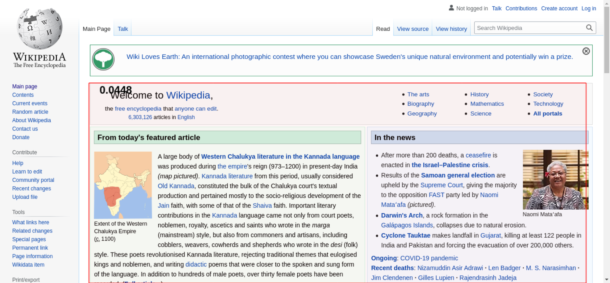
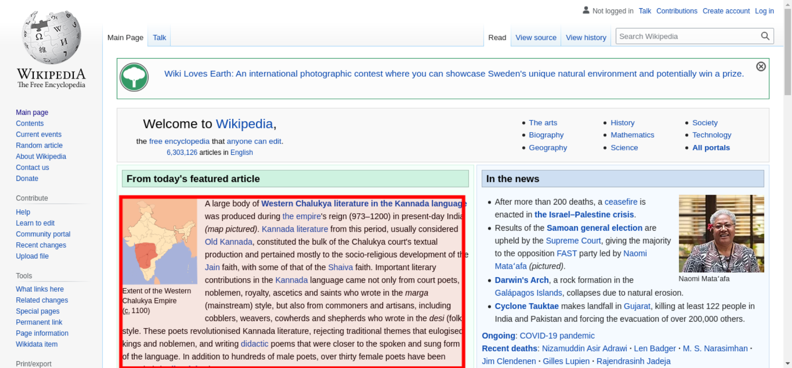

Tested using Chrome 90.0.4430.85 (runtime settings).
| Metric | Value |
|---|---|
| Performance score | 77 |
| Total page size | 331.5 KB |
| Requests | 35 |
| TTFB | 355 ms |
| Fully Loaded | 1.078 s |
| First Visual Change | 667 ms |
| FCP | 656 ms |
| LCP | 656 ms |
| CLS | 0.04494696164522644 |
| Total Blocking Time | 24 ms |
| Max Potential FID | 74 ms |
| CPU long tasks | 2 |
| Speed Index | 673 ms |
| Visual Complete 85% | 667 ms |
| Visual Complete 99% | 733 ms |
| Last Visual Change | 1.067 s |
Use--filmstrip.showAll to show all filmstrips.
The coach helps you find performance problems on your web page using web performance best practice rules. And gives you advice on privacy and best practices.

| Title | Advice | Score |
|---|---|---|
| Inline CSS for faster first render (inlineCss) | The page has both inline CSS and CSS requests even though it uses a HTTP/2-ish connection. If you have many users on slow connections, it can be better to only inline the CSS. Run your own tests and check the waterfall graph to see what happens. | 95 |
| Description: In the early days of the Internet, inlining CSS was one of the ugliest things you can do. That has changed if you want your page to start rendering fast for your user. Always inline the critical CSS when you use HTTP/1 and HTTP/2 (avoid doing CSS requests that block rendering) and lazy load and cache the rest of the CSS. It is a little more complicated when using HTTP/2. Does your server support HTTP push? Then maybe that can help. Do you have a lot of users on a slow connection and are serving large chunks of HTML? Then it could be better to use the inline technique, becasue some servers always prioritize HTML content over CSS so the user needs to download the HTML first, before the CSS is downloaded. | ||
| Avoid CPU Long Tasks (longTasks) | The page has 2 CPU long tasks with the total of 230 ms. However the CPU Long Task is depending on the computer/phones actual CPU speed, so you should measure this on the same type of the device that your user is using. Use Geckoprofiler for Firefox or Chromes tracelog to debug your Long Task. | 60 |
| Description: Long CPU tasks locks the thread. To the user this is commonly visible as a "locked up" page where the browser is unable to respond to user input; this is a major source of bad user experience on the web today. However the CPU Long Task is depending on the computer/phones actual CPU speed, so you should measure this on the same type of the device that your user is using. | ||
Offenders:
| ||
| Avoid extra requests by setting cache headers (cacheHeaders) | The page has 21 requests that are missing a cache time. Configure a cache time so the browser doesn't need to download them every time. It will save 88.2 kB the next access. | 0 |
| Description: The easiest way to make your page fast is to avoid doing requests to the server. Setting a cache header on your server response will tell the browser that it doesn't need to download the asset again during the configured cache time! Always try to set a cache time if the content doesn't change for every request. | ||
Offenders:
| ||
| Long cache headers is good (cacheHeadersLong) | The page has 3 requests that have a shorter cache time than 30 days (but still a cache time). | 97 |
| Description: Setting a cache header is good. Setting a long cache header (at least 30 days) is even better beacause then it will stay long in the browser cache. But what do you do if that asset change? Rename it and the browser will pick up the new version. | ||
| Offenders: | ||
| Total JavaScript size shouldn't be too big (javascriptSize) | The total JavaScript transfer size is 207.9 kB and the uncompressed size is 746.7 kB. This is quite large. | 0 |
| Description: A lot of JavaScript often means you are downloading more than you need. How complex is the page and what can the user do on the page? Do you use multiple JavaScript frameworks? | ||
| Don't use private headers on static content (privateAssets) | The page has 2 requests with private headers. The main page has a private header. It could be right in some cases where the user can be logged in and served specific content. But if your asset is static it should never be private. Make sure that the assets really should be private and only used by one user. Otherwise, make it cacheable for everyone. | 90 |
| Description: If you set private headers on content, that means that the content are specific for that user. Static content should be able to be cached and used by everyone. Avoid setting the cache header to private. | ||
| Offenders: | ||
| Title | Advice | Score |
|---|---|---|
| Use a good Content-Security-Policy header to make sure you you avoid Cross Site Scripting (XSS) attacks. (contentSecurityPolicyHeader) | Set a Content-Security-Policy header to make sure you are not open for Cross Site Scripting (XSS) attacks. You can start with setting a Content-Security-Policy-Report-Only header, that will only report the violation, not stop the download. | 0 |
| Description: Content Security Policy is delivered via a HTTP response header, and defines approved sources of content that the browser may load. It can be an effective countermeasure to Cross Site Scripting (XSS) attacks and is also widely supported and usually easily deployed. https://scotthelme.co.uk/content-security-policy-an-introduction/. | ||
| Offenders: | ||
| Set a referrer-policy header to make sure you do not leak user information. (referrerPolicyHeader) | Set a referrer-policy header to make sure you do not leak user information. | 0 |
| Description: Referrer Policy is a new header that allows a site to control how much information the browser includes with navigations away from a document and should be set by all sites. https://scotthelme.co.uk/a-new-security-header-referrer-policy/. | ||
| Offenders: | ||
| Page info | |
|---|---|
| Title | Wikipedia, the free encyclopedia |
| Generator | MediaWiki 1.37.0-wmf.6 |
| Width | 1350 |
| Height | 2580 |
| DOM elements | 993 |
| Avg DOM depth | 11 |
| Max DOM depth | 19 |
| Iframes | 0 |
| Script tags | 6 |
| Local storage | 519.1 KB |
| Session storage | 0 b |
| HTML vs AMP | Plain good HTML page |
| Resource Hints |
|---|
| dns-prefetch |
| https://login.wikimedia.org/ |
| https://meta.wikimedia.org/ |
| preconnect |
| https://upload.wikimedia.org/ |
Data collected using Wappalyzer. Use --browsertime.firefox.includeResponseBodies htmlor --browsertime.chrome.includeResponseBodies htmlto help Wappalyser find more information about technologies used.
| Technology | Confidence | Category |
|---|---|---|
| MediaWiki | 100 | Wikis |
| PHP | 100 | Programming languages |
| Bootstrap 2 | 100 | UI frameworks |
| jQuery | 100 | JavaScript libraries |
| Visual Metrics | |
|---|---|
| First Visual Change | 667 ms |
| Speed Index | 673 ms |
| Visual Complete 85% | 667 ms |
| Visual Complete 95% | 667 ms |
| Visual Complete 99% | 733 ms |
| Last Visual Change | 1.067 s |
| Visual Readiness | 400 ms |
| Navigation Timing | |
|---|---|
| backEndTime | 355 ms |
| domContentLoadedTime | 615 ms |
| domInteractiveTime | 615 ms |
| domainLookupTime | 7 ms |
| frontEndTime | 481 ms |
| pageDownloadTime | 3 ms |
| pageLoadTime | 839 ms |
| redirectionTime | 0 ms |
| serverConnectionTime | 285 ms |
| serverResponseTime | 56 ms |
| Google Web Vitals | |
|---|---|
| First Contentful Paint (FCP) | 656 ms |
| Largest Contentful Paint (LCP) | 656 ms |
| Cumulative Layout Shift (CLS) | 0.04 |
| Total Blocking Time (TBT) | 24 ms |
| Extra timings | |
|---|---|
| First Contentful Paint (FCP) | 656 ms |
| First Paint | 656 ms |
| Largest Contentful Paint (LCP) | 656 ms |
| Load Event End | 839 ms |
| Fully loaded | 1.078 s |
| User Timing marks | |
|---|---|
| mwStartup | 697 ms |
| mwCentralNoticeBanner | 1.010 s |
When in time the page main content is rendered (collected using the Largest Contentful Paint API). Read more about Largest Contentful Paint.
| Element type | P |
| Element/tag | <p></p> |
| Render time | 656 ms |
| Load time | 0 ms |
| Size (width*height) | 180596 |
| DOM path | |
| div#content > div#bodyContent > div#mw-content-text > div:eq(0) > table#mp-upper > tbody > tr > td#mp-left > div#mp-tfa > p> div#content > div#bodyContent > div#mw-content-text > div:eq(0) > table#mp-upper > tbody > tr > td#mp-left > div#mp-tfa > p> | |

The largest contentful paint is highlighted in the image. If no element is highlighted the element was removed before the screenshot or the LCP API couldn't find the element.
0.04495 cumulative layout shift collected from the Cumulative Layout Shift API.
These HTML elements contribute most to the Cumulative Layout Shifts of the page. The higher score, the more layout shift.
| Score | HTML Element |
|---|---|
| 0.04479 | <div id="mw-content-text" class="mw-body-content mw-content-ltr" lang="en" dir="ltr"></div> |
| body > div#content > div#bodyContent > div#mw-content-text | |
| 0.00016 | |
| body > div#content > div#siteNotice > div#centralNotice > div:eq(0) > div:eq(1) > center > span > a > #text | |

The elements that have shifted place is highlighted in the image (that have a higher value than 0.01). If the element shifted outside of the viewport, you will not see it there. It can be hard to understand what content that has shifted, if that's the case, checkout the video or the filmstrip of the run.
| name | duration | description |
|---|---|---|
| cache | 0 | hit-front |
| host | 0 | cp3058 |
There are no custom configured scripts.
There are no custom extra metrics from scripting.
| name | value |
|---|---|
| AudioHandlers | 0 |
| Documents | 11 |
| Frames | 6 |
| JSEventListeners | 55 |
| LayoutObjects | 1717 |
| MediaKeySessions | 0 |
| MediaKeys | 0 |
| Nodes | 2522 |
| Resources | 36 |
| ContextLifecycleStateObservers | 24 |
| V8PerContextDatas | 1 |
| WorkerGlobalScopes | 0 |
| UACSSResources | 0 |
| RTCPeerConnections | 0 |
| ResourceFetchers | 11 |
| AdSubframes | 0 |
| DetachedScriptStates | 0 |
| ArrayBufferContents | 3 |
| LayoutCount | 13 |
| RecalcStyleCount | 16 |
| LayoutDuration | 122 |
| RecalcStyleDuration | 49 |
| DevToolsCommandDuration | 7 |
| ScriptDuration | 232 |
| V8CompileDuration | 6 |
| TaskDuration | 624 |
| TaskOtherDuration | 207 |
| ThreadTime | 1 |
| ProcessTime | 1 |
| JSHeapUsedSize | 7136036 |
| JSHeapTotalSize | 10559488 |
| FirstMeaningfulPaint | 656 |
How the page is built.
| Summary | |
|---|---|
| HTTP version | HTTP/2.0 |
| Total requests | 35 |
| Total domains | 4 |
| Total transfer size | 331.5 KB |
| Total content size | 954.1 KB |
| Responses missing compression | 8 |
| Number of cookies | 3 |
| Third party cookies | 0 |
| Requests per response code | |
|---|---|
| 200 | 35 |
| Content | Header Size | Transfer Size | Content Size | Requests |
|---|---|---|---|---|
| html | 0 b | 19.3 KB | 76.9 KB | 1 |
| css | 0 b | 12.9 KB | 54.7 KB | 2 |
| javascript | 0 b | 203.1 KB | 729.2 KB | 7 |
| image | 0 b | 93.3 KB | 89.1 KB | 20 |
| svg | 0 b | 1.6 KB | 1.5 KB | 4 |
| favicon | 0 b | 1.2 KB | 2.7 KB | 1 |
| Total | 0 b | 331.5 KB | 954.1 KB | 35 |
| Domain | Header Size | Transfer Size | Content Size | Requests |
|---|---|---|---|---|
| en.wikipedia.org | N/A | 245.3 KB | 871.3 KB | 14 |
| upload.wikimedia.org | N/A | 84.7 KB | 80.7 KB | 19 |
| login.wikimedia.org | N/A | 451 B | 236 B | 1 |
| meta.wikimedia.org | N/A | 945 B | 1.8 KB | 1 |
| type | min | median | max |
|---|---|---|---|
| Expires | 0 seconds | 0 seconds | 1 year |
| Last modified | 2 seconds | 23 weeks | 8 years |
| Content | Transfer Size | Requests |
|---|---|---|
| html | 0 b | 0 |
| css | 0 b | 0 |
| javascript | 20.8 KB | 3 |
| image | 2.7 KB | 2 |
| font | 0 b | 0 |
| svg | 650 B | 1 |
| favicon | 1.2 KB | 1 |
| Total | 25.4 KB | 7 |
Includes requests done after onLoad.
| Content | Transfer Size | Requests |
|---|---|---|
| html | 0 b | 0 |
| css | 0 b | 0 |
| javascript | 181.6 KB | 6 |
| image | 2.7 KB | 2 |
| font | 0 b | 0 |
| svg | 650 B | 1 |
| favicon | 1.2 KB | 1 |
| Total | 186.2 KB | 10 |
Download the Chrome trace log and drag and drop it into Developer Tools / Performance in Chrome.
Collected using the Long Task API. A long task is a task that take 50 milliseconds or more.
| Type | Quantity | Total duration (ms) |
|---|---|---|
| Total Blocking Time | 24 | |
| Max Potential First Input Delay | 74 | |
| Long Tasks before First Paint | 1 | 156 |
| Long Tasks before First Contentful Paint | 1 | 156 |
| Long Tasks after Load Event End | 1 | 74 |
| Total Long Tasks | 2 | 230 |
| name | startTime | duration | containerId | containerName | containerSrc | containerType |
|---|---|---|---|---|---|---|
| unknown | 457 | 156 | window | |||
| self | 840 | 74 | window |
Calculated using Tracium.
| Categories (ms) | |
|---|---|
| parseHTML | 34 |
| styleLayout | 170 |
| paintCompositeRender | 34 |
| scriptParseCompile | 7 |
| scriptEvaluation | 232 |
| garbageCollection | 16 |
| other | 154 |
| Events (ms) | |
|---|---|
| V8.Execute | 214 |
| RunTask | 149 |
| Layout | 122 |
| UpdateLayoutTree | 48 |
| ParseHTML | 32 |
| Paint | 11 |
| UpdateLayerTree | 10 |
| Tool/domain | Time (ms) |
|---|---|
| en.wikipedia.org | 270.2 |
Third party requests categorised by Third party web.
Calculated using (.*wikipedia.*||.*wikimedia.*) (use --firstParty to configure).
| Content | Header Size | Transfer Size | Content Size | Requests |
|---|---|---|---|---|
| html | 0 b | 19.3 KB | 76.9 KB | 1 |
| css | 0 b | 12.9 KB | 54.7 KB | 2 |
| javascript | 0 b | 203.1 KB | 729.2 KB | 7 |
| image | 0 b | 93.3 KB | 89.1 KB | 20 |
| font | 0 b | 0 b | 0 b | 0 |
| svg | 0 b | 1.6 KB | 1.5 KB | 4 |
| favicon | 0 b | 1.2 KB | 2.7 KB | 1 |
| Total | N/A | 331.5 KB | 954.1 KB | 35 |
| Content | Header Size | Transfer Size | Content Size | Requests |
|---|---|---|---|---|
| html | 0 b | 0 b | 0 b | 0 |
| css | 0 b | 0 b | 0 b | 0 |
| javascript | 0 b | 0 b | 0 b | 0 |
| image | 0 b | 0 b | 0 b | 0 |
| font | 0 b | 0 b | 0 b | 0 |
| Total | N/A | N/A | N/A |
afterPageCompleteCheck.png
layoutShift.png
largestContentfulPaint.png
{kind=link}
{kind=link}
{kind=link}
{kind=link}
{kind=link}
{kind=link}
{kind=link}
{kind=link}
{kind=link}
{kind=link}
{kind=link}
{kind=link}
{kind=link}
{kind=link}
{kind=link}
{kind=link}
{kind=link}
{kind=link}
{kind=link}
{kind=link}
{kind=link}
{kind=link}
{kind=link}
{kind=link}
{kind=link}
{kind=link}
{kind=link}
{kind=link}
{kind=link}
{kind=link}
{kind=link}
{kind=link}
{kind=link}
{kind=link}
{kind=link}